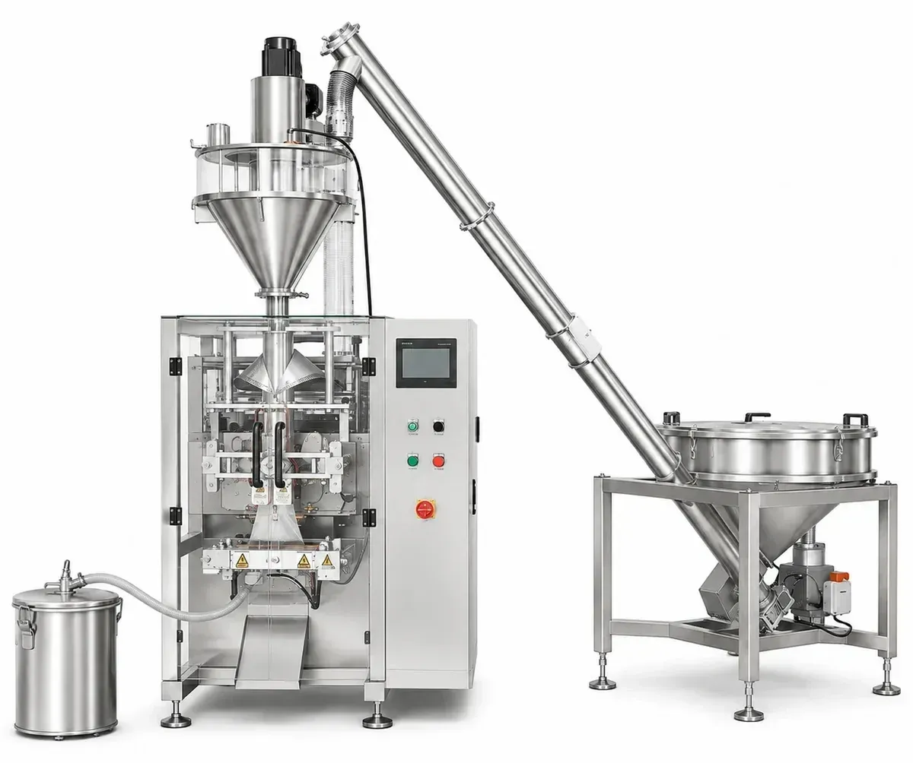
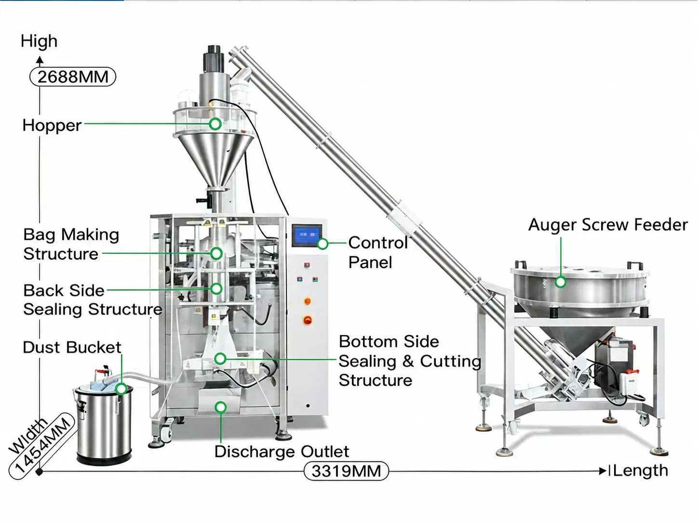
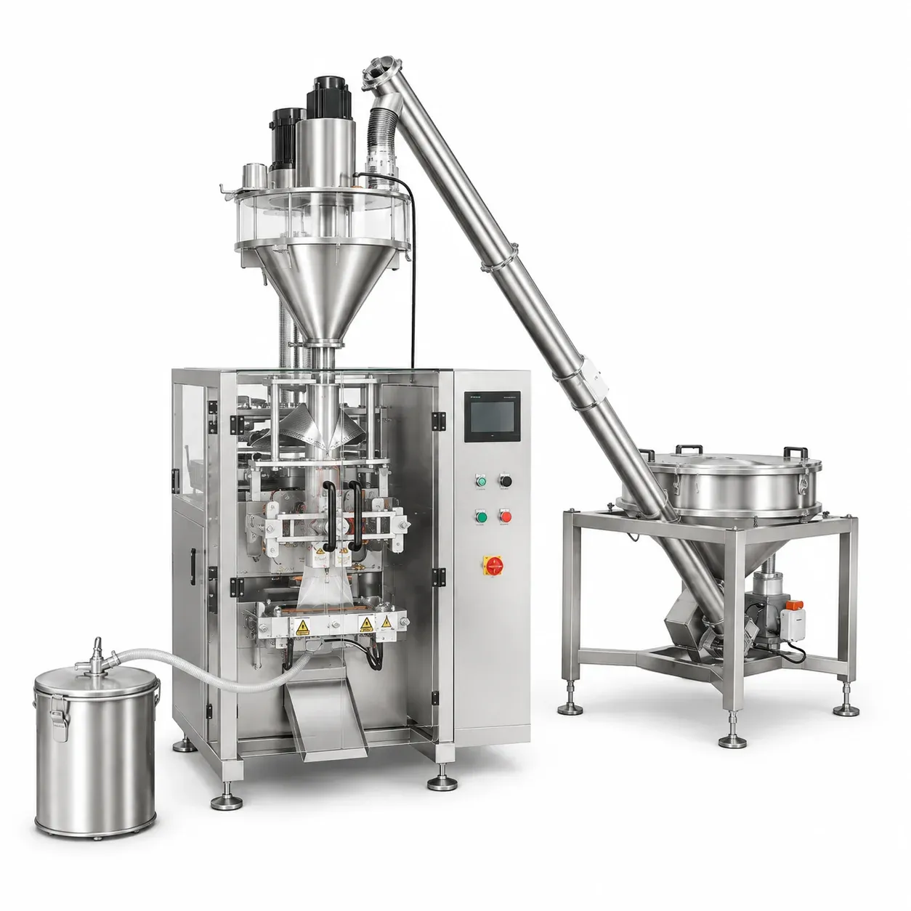

01
Household Cleaning
Laundry detergent powder, washing powder, powdered cleaner and bleaching powder.
VFFS Packaging Machines
The PBF-06 is an automatic powder packing machine that combines auger feeding, auger dosing, VFFS bag forming, filling and sealing in one system. It packs dry powders such as laundry detergent powder, washing powder, bleaching powder and shampoo powder into roll-film bags of 60–250 x 80–350 mm
PBF-06
The PBF-06 is an automatic auger powder VFFS packing machine with dust collection, designed for dry powder products such as laundry detergent powder, washing powder, bleaching powder, shampoo powder and similar powdered materials.
Powder is fed automatically by an inclined auger feeder, measured by the auger dosing unit, and filled into bags formed from roll film by the VFFS packaging section, followed by sealing and cutting — all in one continuous process.

An integrated dust collection system captures airborne powder around the filling and bag-forming area, helping keep the packaging section cleaner during operation.
The machine suits manufacturers of household cleaning powders, personal care powders and dry chemical powders who need a compact, automatic powder bagging solution for bags of 60–250 x 80–350 mm.
PBF-06

PBF-06
The structure diagram shows the hopper, bag making and sealing structures of the PBF-06.
Laundry detergent powder, washing powder, powdered cleaner and bleaching powder.
Shampoo powder and similar dry personal care powders.
Similar dry chemical powders for general consumer and industrial use.
Automatic powder feeding, dosing, bag forming, filling and sealing in one system.
Auger-based dosing provides controlled feeding for fine powder products.
The auger feeder maintains continuous powder supply for more stable packaging operation.
Integrated dust collection helps reduce airborne powder around the filling and sealing area.
User-friendly touch screen makes machine adjustment and operation easier.
Sealing temperature can be adjusted according to different packaging film materials.
Suitable for bag widths from 60 to 250 mm and bag lengths from 80 to 350 mm.
A dust collection system helps capture airborne powder generated around the filling and bag-forming area, keeping the packaging section cleaner during operation.
Powder is automatically transferred to the filling hopper through the auger feeding system.
The auger dosing unit measures and dispenses the required quantity of powder.
Roll film is formed into a bag by the VFFS packaging section.
The measured powder is discharged into the formed bag.
Vertical and horizontal sealing close the bag, followed by cutting.
The finished package is discharged from the machine.
PBF-06
Alternative measuring method for powder dosing by weight.
Standard auger dosing configuration for controlled powder feeding.
Cup-based volumetric measuring option for suitable powders.
Multi-head weighing option for higher dosing flexibility.
Manual powder feeding option where automatic feeding is not required.
Sealing types can be customized according to the packaging film and bag requirements.
Send these details with your inquiry and PACKGENIX can recommend a suitable dosing method, bag format and machine configuration for your powder.
Tell us the powder name, whether it is dusty or free-flowing, and its bulk density if available. The filling range is given in volume (150–2000 ml), so bulk density decides the actual filling weight per bag.
Required filling volume per bag within 150–2000 ml.
Bag width 60–250 mm and bag length 80–350 mm.
Compatible laminated films such as POPP/CPP, POPP/VMCPP and CPP/PE; film thickness 0.05–0.20 mm; maximum film width 520 mm.
Required output within 5–80 bags per minute, depending on product, filling quantity, bag size and film.
Local voltage, 110/220V at 50–60 Hz.
Product Video
Watch the PBF-06 automatic auger powder VFFS packing machine in operation.
PBF-06

PBF-06
Send us your powder product, filling quantity, bag dimensions and target speed. PACKGENIX can review your packaging requirements and recommend a suitable dosing method, bag format and machine configuration.
PBF-06
Tell us your powder product, filling quantity, bag dimensions and target speed — PACKGENIX will recommend a suitable dosing method, bag format and machine configuration.